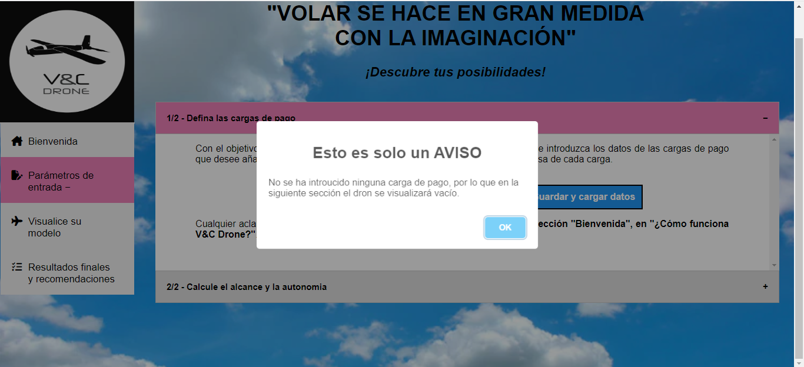
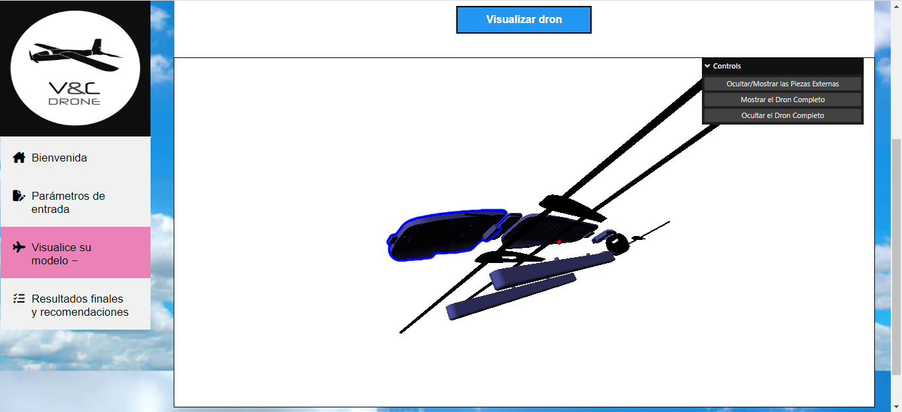
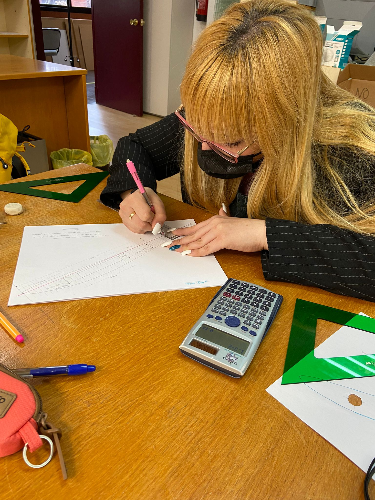
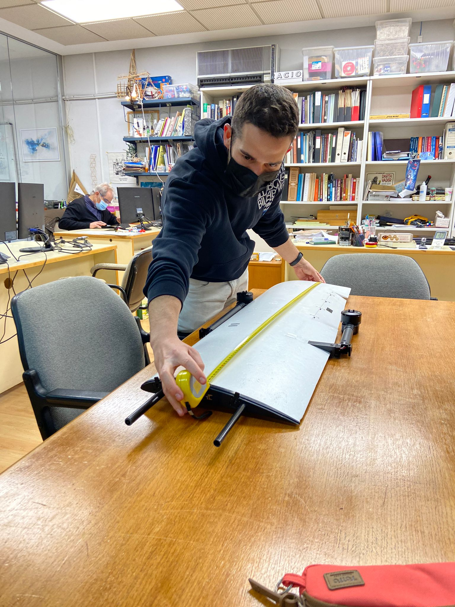
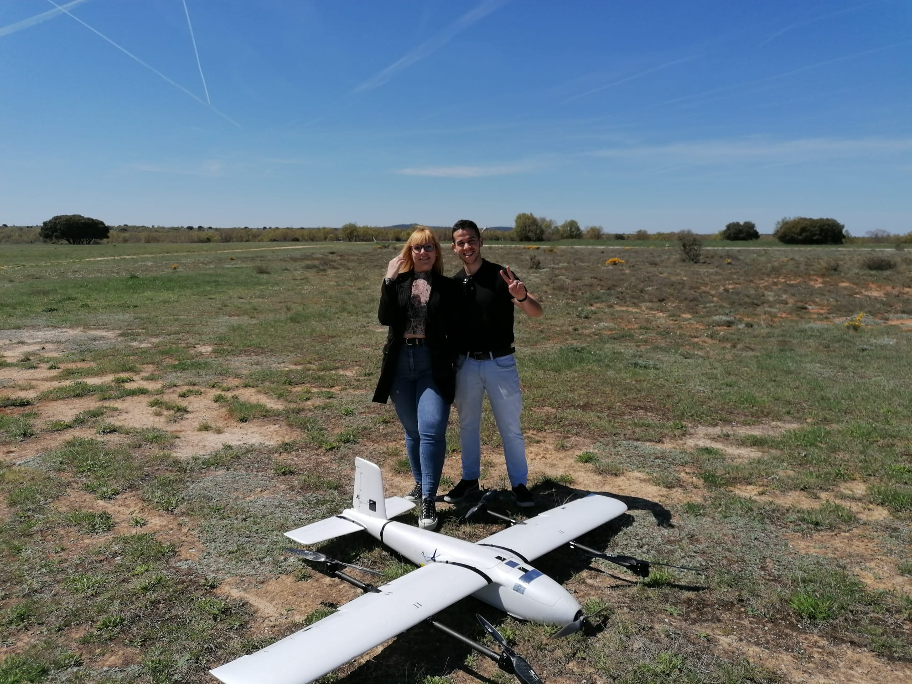

Bienvenido/a a V&C Drone. Le presentamos la tecnología que puede ayudarle a descubrir las posibilidades de vuelo de su dron. Tendrá la oportunidad de seleccionar y distribuir en su dron la carga de pago que desee con el fin de asegurar la viabilidad del cumplimiento de la misión de vuelo propuesta. ¡Esperamos que este análisis prevuelo le sea de utilidad!
A continuación, detallaremos sección a sección cuál es el procedimiento a seguir para sacarle el máximo partido a V&C Drone. Aclararemos paso por paso cada una de las dudas que le pudieran susrgir en cualquiera de las partes de esta página web.
En la pestaña “Defina las cargas de pago” dispondrá de tres botones:
ATENCIÓN: si pulsa el botón "Guardar y cargar datos" con “cero cargas” usted estará decidiendo hacer una visualización del dron vacío sin cargar.
Cada una de las cargas definidas será modelada como un prisma rectangular. Los datos que debe introducir por cada una de las cargas son los siguientes:
Una vez recibida la notificación de éxito de envío de datos, usted deberá dirigirse a la sección “Visualice su dron”, donde, pulsando la pestaña “Visualice su dron” y después el botón “Visualizar dron”, podrá ver el modelo 3D del dron con las cargas que haya definido en la escena también.
También en la pestaña “Calcule el alcance y la autonomía” de la sección “Parámetros de entrada” tendrá que rellenar un total de 9 casillas para que nosotros podamos calcular el alcance y la autonomía de su dron. Estos 9 datos dependerán de la fase de vuelo del VTOL, y son los siguientes:
Cuando haya introducido todos los datos solicitados, pulse el botón “Guardar y Calcular”.
V&C Drone nació en febrero de 2022 en la Universidad de Politécnica de Madrid como Proyecto de Fin de Grado de la mano de Virginia Bueno y César Jiménez, tutorizados por Sergio Ávila y Luis Izquierdo.
El motivo de su nacimiento fue la necesidad de poder realizar cálculos preliminares sobre el vuelo del dron Fighter VTOL Fix-wing Aircraft.
Virginia Bueno es la creadora del software que se esconde detrás de esta página web. Una persona muy comprometida con su trabajo, persistente y organizada gracias a la cual ha sido posible obtener todos los resultados preliminares de vuelo que podrá visualizar en V&C Drone. ¡Virginia espera que su vuelo cumpla con las expectativas que le proporcionamos!
César Jiménez es el creador de la página web que está leyendo ahora mismo. Su gusto por los desafíos, persistencia en el trabajo y creatividad han hecho de esta página web algo sencillo de entender y utilizar. ¡César espera que su visita a este sitio web sea lo más cómoda y satisfactoria posible!
¡Juntos forman un gran equipo de trabajo!
Madrugar por las mañanas, acostarse tarde por las noches, una entrega completa a este trabajo…todos los sacrificios, al final, ¡siempre merecen la pena! ¡Ambos están encantados de haber desarrollado un entorno que le pueda ser de utilidad en su misión de vuelo!
¡Le deseamos un buen vuelo! 😄 🛫
Con el objetivo de calcular el centro de gravedad de su dron, necesitaremos que introduzca los datos de las cargas de pago que desee añadir. Se piden la posición (X, Y, Z), las dimensiones (A, B, H) y la masa de cada carga.
Cualquier aclaración que pueda necesitar en este apartado, se encuentra en la sección "Bienvenida", en "¿Cómo funciona V&C Drone?".
Con el objetivo de calcular el alcance y la autonomía de su dron, necesitaremos que introduzca los siguientes datos:
Cualquier aclaración que pueda necesitar en este apartado, se encuentra en la sección "Bienvenida", en "¿Cómo funciona V&C Drone?".
¡Bienvenido a la primera pestaña de resultados! Si usted ya ha incluido los datos de sus cargas de pago en la pestaña de "Parámetros de entrada", pulse el siguiente botón para visualizar su dron cargado:
"De momento no hay sugerencias."